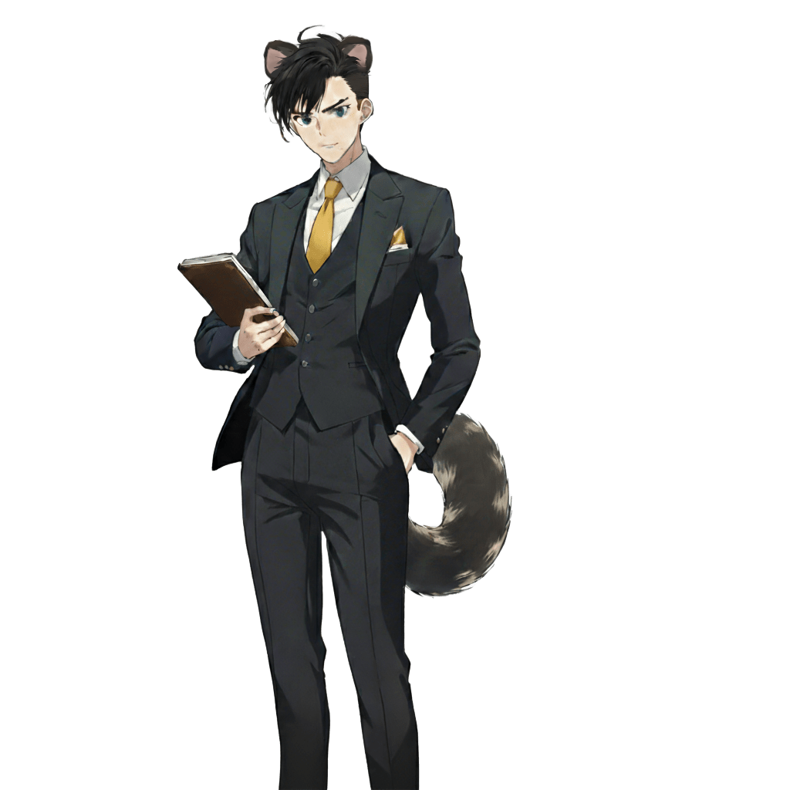

性格
銀行員というその仕事に相応しい、几帳面でマメな男性。いつも忙しなく動いていないと気が休まらず、自分から自分の仕事を増やしてその中に埋没している。人間のことは金銭的な価値だけで評価しており、それ以外の人格という概念を認めていない。
仕事について
暗黒中華街における唯一の銀行として、貨幣の発行や金融取引、保険の販売まで幅広く手掛けている。金に関わる全てのことを自分の手のうちに掌握しておかなければ気が済まない。彼は自分の意思に従わずに動く全ての存在をひどく恐れており、全てをコントロールしたいのだ。
過去
15年前の呑紅街での火災の際に乗り込んできた風狸族の一派だが、呑紅街の喧騒に塗れた空気感が気性に合わず、黄惑街まで逃れてきた。
彼は風花や他の風狸族と違って、風の力を自由に使いこなすことができない。風越しに音を伝えることも苦手で、耳や尻尾を自在に出し入れすることにも手こずる。そういった劣等感が、他の仲間と道を違えてこの街にやってきた理由なのかもしれない。
黄惑街では特殊な能力ではなく「金」という明白な指標で評価されるから、安心して生きていける。彼は今の仕事に心の底から満足している。
能力
風狸の力はほとんど使えないといえど、風越しに同胞に連絡を送りあったり、多少の索敵を行ったりすることは可能である。しかし彼の最大の武器は、緻密な計算を得意とするその頭脳である。